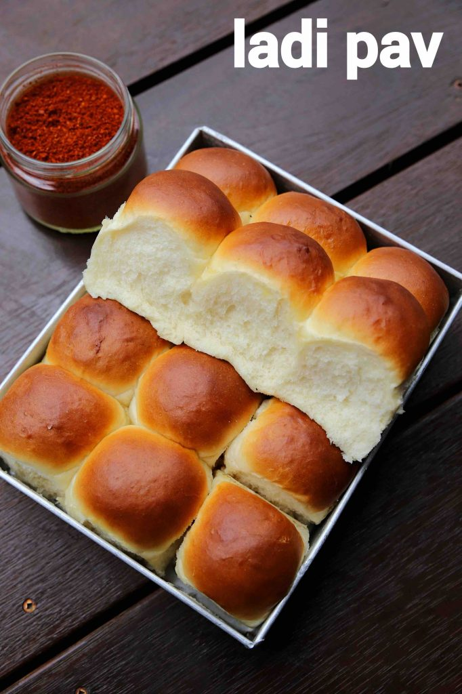

Go back
Breadrolls
Aka Ladi Pav

Thank *uck we finally have a vegan recipe. This one promises to conjure up feelings of nostalgia. A whiff of this will remind you of your local Bombay bakery. One bite and it will melt in your mouth, leaving you begging for some savory bhaji to compliment it. Let's get started!
Ingredients
- 2 cups All-purpose flour
- 1 tsp instant yeast
- 1 tbsp white sugar
- 3/4 cups water
- 2 tbsp oil
- 1 tsp salt
Steps
- Pour sugar and yeast in a mixing bowl and add water. Stir and let sit for a few minutes until the yeast blooms
- Sift in 1 cup of flour and add salt. Stir to a paste
- Sift in second cup of flour and add oil. Knead on lowest setting until combined and leaving edges ~5 minutes
- Spray the dough with oil, cover and let rest for 1 hour in a warm area
- Knead again for 2-3 minutes on lowest setting, remove from mixing bowl and partition into balls, tucking in the ends
- Make 8 large or 12 medium balls and place evenly in greased pan. Cover with damp paper towel and dish cloth. Let rise for 1 hour
- Preheat oven to 390 F
- Baste top of rolls with melted butter and bake for 15 minutes, until internal temperature of 185 F or tops are browned
- Let cool for 10 minutes, then remove from pan and let cool on rack
Bon appetite!